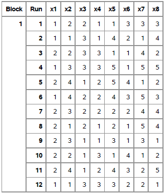
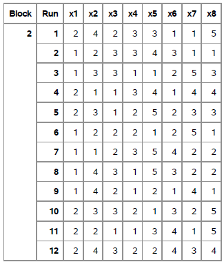
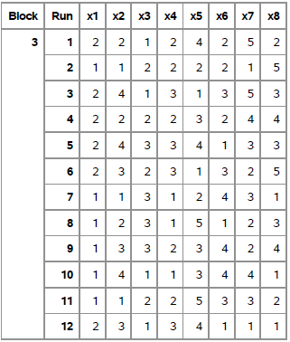
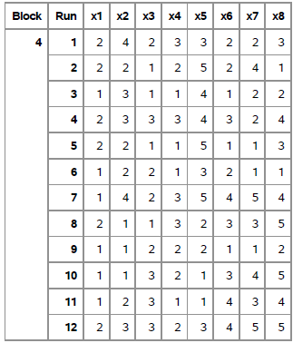
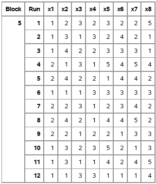
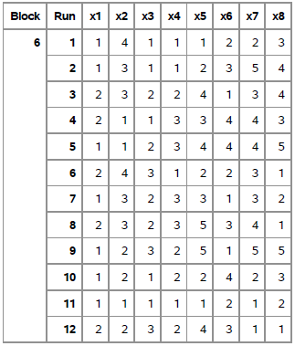
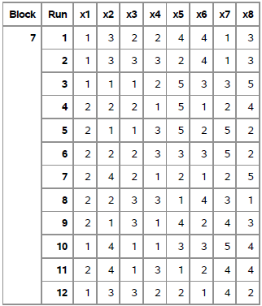
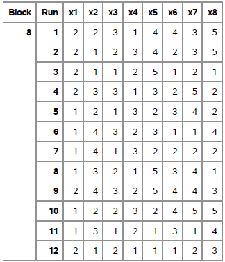
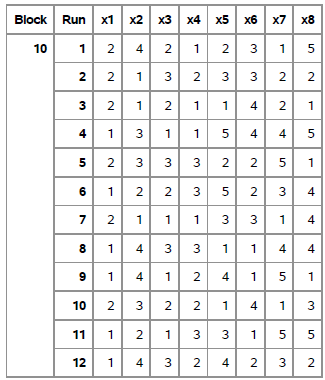
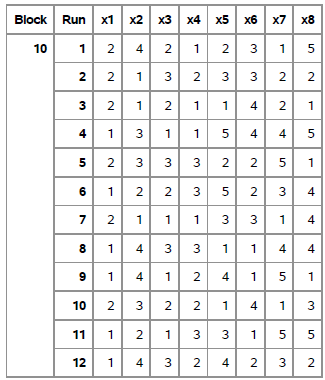

Vignette generation
viernes 21 agosto 2020 19:26:47
1 Percepciones y preferencias sobre los impuestos a la renta.
FONDECYT 1160921. Economía moral de la meritocracia y preferencias redistributivas.
El presente proyecto de investigación tiene por objetivo identificar cuáles son las características de los contribuyentes que los ciudadanos consideran relevantes al decidir el monto que debería pagar en impuesto a la renta. Para este propósito se ha diseñado una encuesta factorial, donde en cada viñeta se presentará una caracterización de un perfil ficticio y dos preguntas: “¿Cuánto cree usted que la persona descrita paga actualmente en impuesto a la renta?” y "¿Cuánto cree usted que la persona descrita debería pagar en impuesto a la renta?. En la siguiente tabla se presentan las dimensiones y los niveles de las viñetas.
| Dimensiones | Operacionalización | Niveles |
|---|---|---|
| Sexo | 1. Hombre | |
| 2. Mujer | ||
| ————– | ——————- | —————— |
| Apellido | 1. Español | |
| 2. Vasco-Castellano | ||
| 3. Europeo | ||
| 4. Indígena | ||
| ————– | ——————- | —————— |
| Edad | 1. 35 años | |
| 2. 45 años | ||
| 3. 55 años | ||
| ————– | ——————- | —————— |
| Nivel socioeconómico | Dependencia de la escuela | 1. Municipal |
| de origen | a la que asistió | 2. Subvencionado |
| 3. Particular | ||
| ————– | ——————- | —————— |
| Nivel educativo | 1. Educación básica completa | |
| 2. Educación media completa | ||
| 3. Educación técnico-profesional completa | ||
| 4. Educación universitaria completa | ||
| 5. Estudios de postgrado | ||
| ————– | ——————- | —————— |
| Necesidades | Cantidad de hijos | 1. No tiene hijos |
| 2. Tiene 1 hijo | ||
| 3. Tiene 2 hijos | ||
| 4. Tiene 5 hijos | ||
| ————– | ——————- | —————— |
| Educación de la madre | 1. Educación básica completa | |
| 2. Educación media completa | ||
| 3. Educación técnico-profesional completa | ||
| 4. Educación universitaria completa | ||
| 5. Estudios de postgrado | ||
| ————– | ——————- | —————— |
| Ingresos | Ingresos mensuales | 1. $320.500 |
| 2. $655.000 | ||
| 3. $1.200.000 | ||
| 4. $2.500.000 | ||
| 5. $4.300.000 |
Las frases que se presentan en las viñetas fueron generadas a partir de un procedimiento que selecciona las combinaciones entre los niveles de las dimensiones (se explicará en detalle más adelante). Con el objetivo de que no se repitiesen constantemente los mismos apellidos y edades durante la encuesta, se hizo una programación en Qualtrics para que el apellido y la edad que se presente en la viñeta se seleccione al azar desde una lista de posibilidades que se asoció a cada nivel. A continuación se presenta la lista de apellidos y edades que se presentaron de forma aleatoria
Apellidos
- Español: González, Muñoz, Rojas, Díaz, Pérez, Figueroa, Reyes, Correa, Bravo, Vergara, Zúñiga, Valenzuela, Molina, Castro, Escobar, Salas, Campos, Gallardo, Gaete y Fuenzalida. Estos apellidos fueron seleccionados de un artículo donde se mencionan varios apellidos asociados al linaje español en Chile. (Vázquez de Acuña, 1986).
- Vasco-castellano: Amunategui, Madariaga, Zañartu, de Sasia, Errázuriz, Irarrázaval, Astaburuaga, Ariztía, Tagle, Enríquez, Vicuña, Larraín, Echenique, Undurraga, Otero, Ampuero, Baquedano y Casanova. La mayoría de los apellidos seleccionados aparece en la lista de los “50 apellidos con mayor porcentaje de profesionales de
prestigio” expuesta en un estudio del PNUD (2017). Los apellidos incorporados desde esa lista fueron evaluados a partir del artículo de Fernández (2010) sobre el linaje Vasco en Chile. Se incorporó un par de apellidos que no aparece en la primera lista, pero sí en el artículo de Fernández.
- Europeo: Zegers, Schmidt, Edwards, Moore, Petersen, Klein, Hitschfeld, Moller, Lyon, Neumann, Hott, Richards, Campbell, Werner, Bunster, Walker y Niklitschek. Todos estos apellidos fueron seleccionados desde la lista de “50 apellidos con mayor porcentaje de profesionales de prestigio” (PNUD, 2017, p.34).
- Indígena: Mariman, Huenchual, Colipi, Carilao, Caripan, Maliqueo, Huenulef, Llanquiman, Lincopi, Melinao, Huaiquipan, Lienlaf, Catrinao, Cheuqueman, Huenchu, Cayupan, Huenten, Levican, Huaiquimil y Pailahueque. Todos estos apellidos fueron seleccionados a partir de la lista de “50 apellidos donde no hay un solo profesional de prestigio” (PNUD, 2017, p.34).
Edades
- 35: 33, 35 y 37 años.
- 45: 43, 45 y 47 años.
- 55: 53, 55 y 57 años.
2 Construcción del instrumento de medición
A continuación se expondrá el proceso de construcción del instrumento. Tras la definición de las dimensiones y niveles se procedió a seleccionar la muestra de viñetas a través de SAS Studio. Es posible subdividir este proceso en tres partes para explicar de mejor forma el procedimiento: la primera orientada a escoger el tamaño de la muestra de viñetas, la segunda enfocada en seleccionar la combinación con el mejor D-efficient y la tercera dirigida a generar las combinaciones para los bloques de viñetas. El resultado de este proceso se transformó en las frases para los bloques de viñetas a través de R y luego se traspaso a la plataforma Qualtrics para finalizar la elaboración de la encuesta.
2.1 Proceso en SAS
2.1.1 Primera parte
Para seleccionar el tamaño de la muestra de viñetas se utilizó la macro MktRuns. Se introdujo el siguiente código, donde cada número representa una dimensión y sus niveles:
%mktruns(2 4 3 3 5 4 5 5)Y se obtuvo como output:
Output SAS n°1
Ninguno de los tamaños sugeridos corresponde a una muestra 100% óptima, por lo que se ha optado por aquel tamaño que posee menos violaciones (diseño de 120 viñetas, con 5 violaciones).
2.1.2 Segunda parte
Para identificar las combinaciones con el mejor D-Efficient se utilizó la macro MktEx. Se introdujo el siguiente código, donde “n” refleja el tamaño de la muestra de viñetas y “seed” permite obtener resultados reproducibles (podría ser cualquier cifra):
%mktex( 2 4 3 3 5 4 5 5, n=120, seed=2624)
El output obtenido abarca aproximadamente 11 planas, pero a continuación se presentan los dos resultados principales:
Output SAS n°2.a
Output SAS n°2.b
A partir de estos resultados es posible precisar que la muestra eficiente de viñetas (la muestra que minimizó la covarianza de las dimensiones) posee un D-Efficient = 99.7691.
2.1.3 Tercera parte
Para generar los bloques de viñetas se utilizó la macro MktBlock. Se introdujo el siguiente código, donde data corresponde al output del proceso anterior (que, por defecto, se llama Randomized) y nblocks indica el número de bloques en que se divide la muestra:
%mktblock(data=Randomized, nblocks=10, seed=2624)Y se obtuvo como output 10 tablas que representan los bloques de viñetas con las combinaciones entre los niveles de las dimensiones, a partir de los cuales es posible elaborar las frases para las viñetas:








 

Estas combinaciones numéricas fueron transformadas en las frases para las viñetas a través de R.
2.2 Proceso en R
A continuación se presenta el código que se utilizo para generar el listado de frases para las viñetas.
library(readxl)
library(tidyverse)2.3 Extraer hojas a objeto como lista
path <-"input/vinetas.xlsx"
decks <-path %>%
excel_sheets() %>%
set_names() %>%
map(read_excel, path = path)## Cambiar nombres columnascolnames(decks$Hoja1)
colnames = c("sexo", "apellido", "edad", "nivel_socioeconómico_de_origen", "nivel_educativo", "necesidades", "educación_de_la_madre", "ingresos", "p1")
for (i in seq_along(decks)){
colnames(decks[[i]]) <- colnames
}
colnames(decks$Hoja1) # comprobar
## Agregar ID único de cada viñeta y id de deck## [1] "x1" "x2" "x3" "x4" "x5" "x6" "x7" "x8" "p1"
## [1] "sexo" "apellido"
## [3] "edad" "nivel_socioeconómico_de_origen"
## [5] "nivel_educativo" "necesidades"
## [7] "educación_de_la_madre" "ingresos"
## [9] "p1"for (i in seq_along(decks)){
decks[[i]]<- decks[[i]] %>% add_column(id = 1:12) %>% add_column(deck = i)
}vig_dat<- plyr::ldply(decks) %>% select(-.id) %>% mutate(deck_vig=paste0(deck,id)) %>% select(deck,id,deck_vig,everything())save(vig_dat,file = "input/data/proc/vig_dim.RData")2.4 Etiquetado de los niveles de las viñetas para generación de textos
for (i in seq_along(decks)){
decks[[i]]<- decks[[i]] %>%
mutate(sexo = recode(sexo, `1` = "[[Question:DB:El señor", `2` = "[[Question:DB:La señora"),
apellido = recode(apellido, `1` = "${e://Field/Espanol}", `2` = "${e://Field/Vasco-Castellano}", `3` = "${e://Field/Europeo}", `4` = "${e://Field/Indigena}"),
edad = recode(edad, `1` = "tiene ${e://Field/35} años,", `2` = "tiene ${e://Field/45} años,", `3` = "tiene ${e://Field/55} años,"),
nivel_socioeconómico_de_origen = recode(nivel_socioeconómico_de_origen, `1` = "estudió en un colegio municipal", `2` = "estudió en un colegio subvencionado", `3` = "estudió en un colegio privado"),
nivel_educativo = recode(nivel_educativo, `1` = "y completó la enseñanza básica.", `2` = "y completó la enseñanza media.", `3` = "y completó estudios técnico-profesionales.", `4` = "y completó estudios universitarios.", `5` = "y completó estudios de postgrado."),
necesidades = recode(necesidades, `1` = "No tiene hijos", `2` = "Tiene un hijo", `3` = "Tiene dos hijos", `4` = "Tiene cinco hijos"),
educación_de_la_madre = recode(educación_de_la_madre, `1` = "y su madre completó la enseñanza básica.", `2` = "y su madre completó la enseñanza media.", `3` = "y su madre completó estudios técnico-profesionales.", `4` = "y su madre completó estudios universitarios.", `5` = "y su madre completó estudios de postgrado."),
ingresos = recode(ingresos, `1` = "Actualmente recibe un ingreso mensual de $321.000 pesos]]", `2` = "Actualmente recibe un ingreso mensual de $655.000 pesos]]", `3` = "Actualmente recibe un ingreso mensual de $1.200.000 pesos]]", `4` = "Actualmente recibe un ingreso mensual de $2.500.000 pesos]]", `5` = "Actualmente recibe un ingreso mensual de $4.300.000 pesos]]"),
p1 = recode(p1, `1` = "[[PageBreak]]"))
}3 Generación de textos (agrega columna “vig” con toda la información de cada fila)
for (i in seq_along(decks)){
decks[[i]] <- decks[[i]] %>%
rowwise() %>%
mutate(vig = paste(sexo, apellido, edad, nivel_socioeconómico_de_origen, nivel_educativo, necesidades, educación_de_la_madre, ingresos, p1)) %>%
ungroup()
}3.1 Viñetas (con ID de deck y intra-deck)
for (i in seq_along(decks)){
print(paste(decks[[i]]$deck,decks[[i]]$id,decks[[i]]$vig))
}## [1] "1 1 [[Question:DB:El señor ${e://Field/Vasco-Castellano} tiene ${e://Field/45} años, estudió en un colegio municipal y completó la enseñanza básica. Tiene dos hijos y su madre completó estudios técnico-profesionales. Actualmente recibe un ingreso mensual de $1.200.000 pesos]] [[PageBreak]]"
## [2] "1 2 [[Question:DB:El señor ${e://Field/Espanol} tiene ${e://Field/55} años, estudió en un colegio municipal y completó estudios universitarios. Tiene un hijo y su madre completó la enseñanza básica. Actualmente recibe un ingreso mensual de $2.500.000 pesos]] [[PageBreak]]"
## [3] "1 3 [[Question:DB:La señora ${e://Field/Vasco-Castellano} tiene ${e://Field/55} años, estudió en un colegio privado y completó la enseñanza básica. No tiene hijos y su madre completó estudios universitarios. Actualmente recibe un ingreso mensual de $655.000 pesos]] [[PageBreak]]"
## [4] "1 4 [[Question:DB:El señor ${e://Field/Europeo} tiene ${e://Field/55} años, estudió en un colegio privado y completó estudios de postgrado. No tiene hijos y su madre completó estudios de postgrado. Actualmente recibe un ingreso mensual de $4.300.000 pesos]] [[PageBreak]]"
## [5] "1 5 [[Question:DB:La señora ${e://Field/Indigena} tiene ${e://Field/35} años, estudió en un colegio subvencionado y completó estudios de postgrado. Tiene cinco hijos y su madre completó la enseñanza básica. Actualmente recibe un ingreso mensual de $655.000 pesos]] [[PageBreak]]"
## [6] "1 6 [[Question:DB:El señor ${e://Field/Indigena} tiene ${e://Field/45} años, estudió en un colegio subvencionado y completó estudios universitarios. Tiene dos hijos y su madre completó estudios de postgrado. Actualmente recibe un ingreso mensual de $1.200.000 pesos]] [[PageBreak]]"
## [7] "1 7 [[Question:DB:La señora ${e://Field/Europeo} tiene ${e://Field/45} años, estudió en un colegio subvencionado y completó la enseñanza media. Tiene un hijo y su madre completó estudios universitarios. Actualmente recibe un ingreso mensual de $2.500.000 pesos]] [[PageBreak]]"
## [8] "1 8 [[Question:DB:La señora ${e://Field/Espanol} tiene ${e://Field/45} años, estudió en un colegio municipal y completó la enseñanza media. No tiene hijos y su madre completó estudios de postgrado. Actualmente recibe un ingreso mensual de $2.500.000 pesos]] [[PageBreak]]"
## [9] "1 9 [[Question:DB:La señora ${e://Field/Europeo} tiene ${e://Field/35} años, estudió en un colegio municipal y completó estudios técnico-profesionales. No tiene hijos y su madre completó estudios técnico-profesionales. Actualmente recibe un ingreso mensual de $321.000 pesos]] [[PageBreak]]"
## [10] "1 10 [[Question:DB:La señora ${e://Field/Vasco-Castellano} tiene ${e://Field/35} años, estudió en un colegio privado y completó la enseñanza básica. Tiene cinco hijos y su madre completó la enseñanza básica. Actualmente recibe un ingreso mensual de $655.000 pesos]] [[PageBreak]]"
## [11] "1 11 [[Question:DB:La señora ${e://Field/Indigena} tiene ${e://Field/35} años, estudió en un colegio subvencionado y completó estudios universitarios. Tiene dos hijos y su madre completó la enseñanza media. Actualmente recibe un ingreso mensual de $4.300.000 pesos]] [[PageBreak]]"
## [12] "1 12 [[Question:DB:El señor ${e://Field/Espanol} tiene ${e://Field/55} años, estudió en un colegio privado y completó estudios técnico-profesionales. Tiene un hijo y su madre completó la enseñanza media. Actualmente recibe un ingreso mensual de $321.000 pesos]] [[PageBreak]]"
## [1] "2 1 [[Question:DB:La señora ${e://Field/Indigena} tiene ${e://Field/45} años, estudió en un colegio privado y completó estudios técnico-profesionales. No tiene hijos y su madre completó la enseñanza básica. Actualmente recibe un ingreso mensual de $4.300.000 pesos]] [[PageBreak]]"
## [2] "2 2 [[Question:DB:El señor ${e://Field/Vasco-Castellano} tiene ${e://Field/55} años, estudió en un colegio privado y completó estudios universitarios. Tiene dos hijos y su madre completó la enseñanza básica. Actualmente recibe un ingreso mensual de $321.000 pesos]] [[PageBreak]]"
## [3] "2 3 [[Question:DB:El señor ${e://Field/Europeo} tiene ${e://Field/55} años, estudió en un colegio municipal y completó la enseñanza básica. Tiene un hijo y su madre completó estudios de postgrado. Actualmente recibe un ingreso mensual de $1.200.000 pesos]] [[PageBreak]]"
## [4] "2 4 [[Question:DB:La señora ${e://Field/Espanol} tiene ${e://Field/35} años, estudió en un colegio privado y completó estudios universitarios. No tiene hijos y su madre completó estudios universitarios. Actualmente recibe un ingreso mensual de $2.500.000 pesos]] [[PageBreak]]"
## [5] "2 5 [[Question:DB:La señora ${e://Field/Europeo} tiene ${e://Field/35} años, estudió en un colegio subvencionado y completó estudios de postgrado. Tiene un hijo y su madre completó estudios técnico-profesionales. Actualmente recibe un ingreso mensual de $1.200.000 pesos]] [[PageBreak]]"
## [6] "2 6 [[Question:DB:El señor ${e://Field/Vasco-Castellano} tiene ${e://Field/45} años, estudió en un colegio subvencionado y completó la enseñanza básica. Tiene un hijo y su madre completó estudios de postgrado. Actualmente recibe un ingreso mensual de $321.000 pesos]] [[PageBreak]]"
## [7] "2 7 [[Question:DB:El señor ${e://Field/Espanol} tiene ${e://Field/45} años, estudió en un colegio privado y completó estudios de postgrado. Tiene cinco hijos y su madre completó la enseñanza media. Actualmente recibe un ingreso mensual de $655.000 pesos]] [[PageBreak]]"
## [8] "2 8 [[Question:DB:El señor ${e://Field/Indigena} tiene ${e://Field/55} años, estudió en un colegio municipal y completó estudios de postgrado. Tiene dos hijos y su madre completó la enseñanza media. Actualmente recibe un ingreso mensual de $655.000 pesos]] [[PageBreak]]"
## [9] "2 9 [[Question:DB:El señor ${e://Field/Indigena} tiene ${e://Field/45} años, estudió en un colegio municipal y completó la enseñanza media. No tiene hijos y su madre completó estudios universitarios. Actualmente recibe un ingreso mensual de $321.000 pesos]] [[PageBreak]]"
## [10] "2 10 [[Question:DB:La señora ${e://Field/Europeo} tiene ${e://Field/55} años, estudió en un colegio subvencionado y completó la enseñanza básica. Tiene dos hijos y su madre completó la enseñanza media. Actualmente recibe un ingreso mensual de $4.300.000 pesos]] [[PageBreak]]"
## [11] "2 11 [[Question:DB:La señora ${e://Field/Vasco-Castellano} tiene ${e://Field/35} años, estudió en un colegio municipal y completó estudios técnico-profesionales. Tiene cinco hijos y su madre completó la enseñanza básica. Actualmente recibe un ingreso mensual de $4.300.000 pesos]] [[PageBreak]]"
## [12] "2 12 [[Question:DB:La señora ${e://Field/Indigena} tiene ${e://Field/55} años, estudió en un colegio subvencionado y completó la enseñanza media. Tiene cinco hijos y su madre completó estudios técnico-profesionales. Actualmente recibe un ingreso mensual de $2.500.000 pesos]] [[PageBreak]]"
## [1] "3 1 [[Question:DB:La señora ${e://Field/Vasco-Castellano} tiene ${e://Field/35} años, estudió en un colegio subvencionado y completó estudios universitarios. Tiene un hijo y su madre completó estudios de postgrado. Actualmente recibe un ingreso mensual de $655.000 pesos]] [[PageBreak]]"
## [2] "3 2 [[Question:DB:El señor ${e://Field/Espanol} tiene ${e://Field/45} años, estudió en un colegio subvencionado y completó la enseñanza media. Tiene un hijo y su madre completó la enseñanza básica. Actualmente recibe un ingreso mensual de $4.300.000 pesos]] [[PageBreak]]"
## [3] "3 3 [[Question:DB:La señora ${e://Field/Indigena} tiene ${e://Field/35} años, estudió en un colegio privado y completó la enseñanza básica. Tiene dos hijos y su madre completó estudios de postgrado. Actualmente recibe un ingreso mensual de $1.200.000 pesos]] [[PageBreak]]"
## [4] "3 4 [[Question:DB:La señora ${e://Field/Vasco-Castellano} tiene ${e://Field/45} años, estudió en un colegio subvencionado y completó estudios técnico-profesionales. Tiene un hijo y su madre completó estudios universitarios. Actualmente recibe un ingreso mensual de $2.500.000 pesos]] [[PageBreak]]"
## [5] "3 5 [[Question:DB:La señora ${e://Field/Indigena} tiene ${e://Field/55} años, estudió en un colegio privado y completó estudios universitarios. No tiene hijos y su madre completó estudios técnico-profesionales. Actualmente recibe un ingreso mensual de $1.200.000 pesos]] [[PageBreak]]"
## [6] "3 6 [[Question:DB:La señora ${e://Field/Europeo} tiene ${e://Field/45} años, estudió en un colegio privado y completó la enseñanza básica. Tiene dos hijos y su madre completó la enseñanza media. Actualmente recibe un ingreso mensual de $4.300.000 pesos]] [[PageBreak]]"
## [7] "3 7 [[Question:DB:El señor ${e://Field/Espanol} tiene ${e://Field/55} años, estudió en un colegio municipal y completó la enseñanza media. Tiene cinco hijos y su madre completó estudios técnico-profesionales. Actualmente recibe un ingreso mensual de $321.000 pesos]] [[PageBreak]]"
## [8] "3 8 [[Question:DB:El señor ${e://Field/Vasco-Castellano} tiene ${e://Field/55} años, estudió en un colegio municipal y completó estudios de postgrado. No tiene hijos y su madre completó la enseñanza media. Actualmente recibe un ingreso mensual de $1.200.000 pesos]] [[PageBreak]]"
## [9] "3 9 [[Question:DB:El señor ${e://Field/Europeo} tiene ${e://Field/55} años, estudió en un colegio subvencionado y completó estudios técnico-profesionales. Tiene cinco hijos y su madre completó la enseñanza media. Actualmente recibe un ingreso mensual de $2.500.000 pesos]] [[PageBreak]]"
## [10] "3 10 [[Question:DB:El señor ${e://Field/Indigena} tiene ${e://Field/35} años, estudió en un colegio municipal y completó estudios técnico-profesionales. Tiene cinco hijos y su madre completó estudios universitarios. Actualmente recibe un ingreso mensual de $321.000 pesos]] [[PageBreak]]"
## [11] "3 11 [[Question:DB:El señor ${e://Field/Espanol} tiene ${e://Field/45} años, estudió en un colegio subvencionado y completó estudios de postgrado. Tiene dos hijos y su madre completó estudios técnico-profesionales. Actualmente recibe un ingreso mensual de $655.000 pesos]] [[PageBreak]]"
## [12] "3 12 [[Question:DB:La señora ${e://Field/Europeo} tiene ${e://Field/35} años, estudió en un colegio privado y completó estudios universitarios. No tiene hijos y su madre completó la enseñanza básica. Actualmente recibe un ingreso mensual de $321.000 pesos]] [[PageBreak]]"
## [1] "4 1 [[Question:DB:La señora ${e://Field/Indigena} tiene ${e://Field/45} años, estudió en un colegio privado y completó estudios técnico-profesionales. Tiene un hijo y su madre completó la enseñanza media. Actualmente recibe un ingreso mensual de $1.200.000 pesos]] [[PageBreak]]"
## [2] "4 2 [[Question:DB:La señora ${e://Field/Vasco-Castellano} tiene ${e://Field/35} años, estudió en un colegio subvencionado y completó estudios de postgrado. Tiene un hijo y su madre completó estudios universitarios. Actualmente recibe un ingreso mensual de $321.000 pesos]] [[PageBreak]]"
## [3] "4 3 [[Question:DB:El señor ${e://Field/Europeo} tiene ${e://Field/35} años, estudió en un colegio municipal y completó estudios universitarios. No tiene hijos y su madre completó la enseñanza media. Actualmente recibe un ingreso mensual de $655.000 pesos]] [[PageBreak]]"
## [4] "4 4 [[Question:DB:La señora ${e://Field/Europeo} tiene ${e://Field/55} años, estudió en un colegio privado y completó estudios universitarios. Tiene dos hijos y su madre completó la enseñanza media. Actualmente recibe un ingreso mensual de $2.500.000 pesos]] [[PageBreak]]"
## [5] "4 5 [[Question:DB:La señora ${e://Field/Vasco-Castellano} tiene ${e://Field/35} años, estudió en un colegio municipal y completó estudios de postgrado. No tiene hijos y su madre completó la enseñanza básica. Actualmente recibe un ingreso mensual de $1.200.000 pesos]] [[PageBreak]]"
## [6] "4 6 [[Question:DB:El señor ${e://Field/Vasco-Castellano} tiene ${e://Field/45} años, estudió en un colegio municipal y completó estudios técnico-profesionales. Tiene un hijo y su madre completó la enseñanza básica. Actualmente recibe un ingreso mensual de $321.000 pesos]] [[PageBreak]]"
## [7] "4 7 [[Question:DB:El señor ${e://Field/Indigena} tiene ${e://Field/45} años, estudió en un colegio privado y completó estudios de postgrado. Tiene cinco hijos y su madre completó estudios de postgrado. Actualmente recibe un ingreso mensual de $2.500.000 pesos]] [[PageBreak]]"
## [8] "4 8 [[Question:DB:La señora ${e://Field/Espanol} tiene ${e://Field/35} años, estudió en un colegio privado y completó la enseñanza media. Tiene dos hijos y su madre completó estudios técnico-profesionales. Actualmente recibe un ingreso mensual de $4.300.000 pesos]] [[PageBreak]]"
## [9] "4 9 [[Question:DB:El señor ${e://Field/Espanol} tiene ${e://Field/45} años, estudió en un colegio subvencionado y completó la enseñanza media. No tiene hijos y su madre completó la enseñanza básica. Actualmente recibe un ingreso mensual de $655.000 pesos]] [[PageBreak]]"
## [10] "4 10 [[Question:DB:El señor ${e://Field/Espanol} tiene ${e://Field/55} años, estudió en un colegio subvencionado y completó la enseñanza básica. Tiene dos hijos y su madre completó estudios universitarios. Actualmente recibe un ingreso mensual de $4.300.000 pesos]] [[PageBreak]]"
## [11] "4 11 [[Question:DB:El señor ${e://Field/Vasco-Castellano} tiene ${e://Field/55} años, estudió en un colegio municipal y completó la enseñanza básica. Tiene cinco hijos y su madre completó estudios técnico-profesionales. Actualmente recibe un ingreso mensual de $2.500.000 pesos]] [[PageBreak]]"
## [12] "4 12 [[Question:DB:La señora ${e://Field/Europeo} tiene ${e://Field/55} años, estudió en un colegio subvencionado y completó estudios técnico-profesionales. Tiene cinco hijos y su madre completó estudios de postgrado. Actualmente recibe un ingreso mensual de $4.300.000 pesos]] [[PageBreak]]"
## [1] "5 1 [[Question:DB:El señor ${e://Field/Vasco-Castellano} tiene ${e://Field/55} años, estudió en un colegio subvencionado y completó estudios técnico-profesionales. Tiene un hijo y su madre completó la enseñanza media. Actualmente recibe un ingreso mensual de $4.300.000 pesos]] [[PageBreak]]"
## [2] "5 2 [[Question:DB:El señor ${e://Field/Europeo} tiene ${e://Field/35} años, estudió en un colegio privado y completó la enseñanza media. Tiene cinco hijos y su madre completó la enseñanza media. Actualmente recibe un ingreso mensual de $321.000 pesos]] [[PageBreak]]"
## [3] "5 3 [[Question:DB:El señor ${e://Field/Indigena} tiene ${e://Field/45} años, estudió en un colegio subvencionado y completó estudios técnico-profesionales. Tiene dos hijos y su madre completó estudios técnico-profesionales. Actualmente recibe un ingreso mensual de $321.000 pesos]] [[PageBreak]]"
## [4] "5 4 [[Question:DB:La señora ${e://Field/Espanol} tiene ${e://Field/55} años, estudió en un colegio municipal y completó estudios de postgrado. Tiene cinco hijos y su madre completó estudios de postgrado. Actualmente recibe un ingreso mensual de $2.500.000 pesos]] [[PageBreak]]"
## [5] "5 5 [[Question:DB:La señora ${e://Field/Indigena} tiene ${e://Field/45} años, estudió en un colegio subvencionado y completó la enseñanza básica. Tiene cinco hijos y su madre completó estudios universitarios. Actualmente recibe un ingreso mensual de $655.000 pesos]] [[PageBreak]]"
## [6] "5 6 [[Question:DB:El señor ${e://Field/Espanol} tiene ${e://Field/35} años, estudió en un colegio privado y completó estudios técnico-profesionales. Tiene dos hijos y su madre completó estudios técnico-profesionales. Actualmente recibe un ingreso mensual de $1.200.000 pesos]] [[PageBreak]]"
## [7] "5 7 [[Question:DB:La señora ${e://Field/Vasco-Castellano} tiene ${e://Field/55} años, estudió en un colegio municipal y completó la enseñanza media. Tiene dos hijos y su madre completó estudios universitarios. Actualmente recibe un ingreso mensual de $655.000 pesos]] [[PageBreak]]"
## [8] "5 8 [[Question:DB:La señora ${e://Field/Indigena} tiene ${e://Field/45} años, estudió en un colegio municipal y completó estudios universitarios. Tiene cinco hijos y su madre completó estudios de postgrado. Actualmente recibe un ingreso mensual de $655.000 pesos]] [[PageBreak]]"
## [9] "5 9 [[Question:DB:La señora ${e://Field/Vasco-Castellano} tiene ${e://Field/35} años, estudió en un colegio subvencionado y completó la enseñanza media. No tiene hijos y su madre completó estudios técnico-profesionales. Actualmente recibe un ingreso mensual de $1.200.000 pesos]] [[PageBreak]]"
## [10] "5 10 [[Question:DB:El señor ${e://Field/Europeo} tiene ${e://Field/45} años, estudió en un colegio privado y completó estudios de postgrado. Tiene un hijo y su madre completó la enseñanza básica. Actualmente recibe un ingreso mensual de $1.200.000 pesos]] [[PageBreak]]"
## [11] "5 11 [[Question:DB:El señor ${e://Field/Europeo} tiene ${e://Field/35} años, estudió en un colegio municipal y completó estudios universitarios. Tiene un hijo y su madre completó estudios universitarios. Actualmente recibe un ingreso mensual de $4.300.000 pesos]] [[PageBreak]]"
## [12] "5 12 [[Question:DB:El señor ${e://Field/Espanol} tiene ${e://Field/55} años, estudió en un colegio privado y completó la enseñanza básica. No tiene hijos y su madre completó la enseñanza básica. Actualmente recibe un ingreso mensual de $2.500.000 pesos]] [[PageBreak]]"
## [1] "6 1 [[Question:DB:El señor ${e://Field/Indigena} tiene ${e://Field/35} años, estudió en un colegio municipal y completó la enseñanza básica. Tiene un hijo y su madre completó la enseñanza media. Actualmente recibe un ingreso mensual de $1.200.000 pesos]] [[PageBreak]]"
## [2] "6 2 [[Question:DB:El señor ${e://Field/Europeo} tiene ${e://Field/35} años, estudió en un colegio municipal y completó la enseñanza media. Tiene dos hijos y su madre completó estudios de postgrado. Actualmente recibe un ingreso mensual de $2.500.000 pesos]] [[PageBreak]]"
## [3] "6 3 [[Question:DB:La señora ${e://Field/Europeo} tiene ${e://Field/45} años, estudió en un colegio subvencionado y completó estudios universitarios. No tiene hijos y su madre completó estudios técnico-profesionales. Actualmente recibe un ingreso mensual de $2.500.000 pesos]] [[PageBreak]]"
## [4] "6 4 [[Question:DB:La señora ${e://Field/Espanol} tiene ${e://Field/35} años, estudió en un colegio privado y completó estudios técnico-profesionales. Tiene cinco hijos y su madre completó estudios universitarios. Actualmente recibe un ingreso mensual de $1.200.000 pesos]] [[PageBreak]]"
## [5] "6 5 [[Question:DB:El señor ${e://Field/Espanol} tiene ${e://Field/45} años, estudió en un colegio privado y completó estudios universitarios. Tiene cinco hijos y su madre completó estudios universitarios. Actualmente recibe un ingreso mensual de $4.300.000 pesos]] [[PageBreak]]"
## [6] "6 6 [[Question:DB:La señora ${e://Field/Indigena} tiene ${e://Field/55} años, estudió en un colegio municipal y completó la enseñanza media. Tiene un hijo y su madre completó estudios técnico-profesionales. Actualmente recibe un ingreso mensual de $321.000 pesos]] [[PageBreak]]"
## [7] "6 7 [[Question:DB:El señor ${e://Field/Europeo} tiene ${e://Field/45} años, estudió en un colegio privado y completó estudios técnico-profesionales. No tiene hijos y su madre completó estudios técnico-profesionales. Actualmente recibe un ingreso mensual de $655.000 pesos]] [[PageBreak]]"
## [8] "6 8 [[Question:DB:La señora ${e://Field/Europeo} tiene ${e://Field/45} años, estudió en un colegio privado y completó estudios de postgrado. Tiene dos hijos y su madre completó estudios universitarios. Actualmente recibe un ingreso mensual de $321.000 pesos]] [[PageBreak]]"
## [9] "6 9 [[Question:DB:El señor ${e://Field/Vasco-Castellano} tiene ${e://Field/55} años, estudió en un colegio subvencionado y completó estudios de postgrado. No tiene hijos y su madre completó estudios de postgrado. Actualmente recibe un ingreso mensual de $4.300.000 pesos]] [[PageBreak]]"
## [10] "6 10 [[Question:DB:El señor ${e://Field/Vasco-Castellano} tiene ${e://Field/35} años, estudió en un colegio subvencionado y completó la enseñanza media. Tiene cinco hijos y su madre completó la enseñanza media. Actualmente recibe un ingreso mensual de $1.200.000 pesos]] [[PageBreak]]"
## [11] "6 11 [[Question:DB:El señor ${e://Field/Espanol} tiene ${e://Field/35} años, estudió en un colegio municipal y completó la enseñanza básica. Tiene un hijo y su madre completó la enseñanza básica. Actualmente recibe un ingreso mensual de $655.000 pesos]] [[PageBreak]]"
## [12] "6 12 [[Question:DB:La señora ${e://Field/Vasco-Castellano} tiene ${e://Field/55} años, estudió en un colegio subvencionado y completó estudios universitarios. Tiene dos hijos y su madre completó la enseñanza básica. Actualmente recibe un ingreso mensual de $321.000 pesos]] [[PageBreak]]"
## [1] "7 1 [[Question:DB:El señor ${e://Field/Europeo} tiene ${e://Field/45} años, estudió en un colegio subvencionado y completó estudios universitarios. Tiene cinco hijos y su madre completó la enseñanza básica. Actualmente recibe un ingreso mensual de $1.200.000 pesos]] [[PageBreak]]"
## [2] "7 2 [[Question:DB:El señor ${e://Field/Europeo} tiene ${e://Field/55} años, estudió en un colegio privado y completó la enseñanza media. Tiene cinco hijos y su madre completó la enseñanza básica. Actualmente recibe un ingreso mensual de $1.200.000 pesos]] [[PageBreak]]"
## [3] "7 3 [[Question:DB:El señor ${e://Field/Espanol} tiene ${e://Field/35} años, estudió en un colegio subvencionado y completó estudios de postgrado. Tiene dos hijos y su madre completó estudios técnico-profesionales. Actualmente recibe un ingreso mensual de $4.300.000 pesos]] [[PageBreak]]"
## [4] "7 4 [[Question:DB:La señora ${e://Field/Vasco-Castellano} tiene ${e://Field/45} años, estudió en un colegio municipal y completó estudios de postgrado. No tiene hijos y su madre completó la enseñanza media. Actualmente recibe un ingreso mensual de $2.500.000 pesos]] [[PageBreak]]"
## [5] "7 5 [[Question:DB:La señora ${e://Field/Espanol} tiene ${e://Field/35} años, estudió en un colegio privado y completó estudios de postgrado. Tiene un hijo y su madre completó estudios de postgrado. Actualmente recibe un ingreso mensual de $655.000 pesos]] [[PageBreak]]"
## [6] "7 6 [[Question:DB:La señora ${e://Field/Vasco-Castellano} tiene ${e://Field/45} años, estudió en un colegio privado y completó estudios técnico-profesionales. Tiene dos hijos y su madre completó estudios de postgrado. Actualmente recibe un ingreso mensual de $655.000 pesos]] [[PageBreak]]"
## [7] "7 7 [[Question:DB:La señora ${e://Field/Indigena} tiene ${e://Field/45} años, estudió en un colegio municipal y completó la enseñanza media. No tiene hijos y su madre completó la enseñanza media. Actualmente recibe un ingreso mensual de $4.300.000 pesos]] [[PageBreak]]"
## [8] "7 8 [[Question:DB:La señora ${e://Field/Vasco-Castellano} tiene ${e://Field/55} años, estudió en un colegio privado y completó la enseñanza básica. Tiene cinco hijos y su madre completó estudios técnico-profesionales. Actualmente recibe un ingreso mensual de $321.000 pesos]] [[PageBreak]]"
## [9] "7 9 [[Question:DB:La señora ${e://Field/Espanol} tiene ${e://Field/55} años, estudió en un colegio municipal y completó estudios universitarios. Tiene un hijo y su madre completó estudios universitarios. Actualmente recibe un ingreso mensual de $1.200.000 pesos]] [[PageBreak]]"
## [10] "7 10 [[Question:DB:El señor ${e://Field/Indigena} tiene ${e://Field/35} años, estudió en un colegio municipal y completó estudios técnico-profesionales. Tiene dos hijos y su madre completó estudios de postgrado. Actualmente recibe un ingreso mensual de $2.500.000 pesos]] [[PageBreak]]"
## [11] "7 11 [[Question:DB:La señora ${e://Field/Indigena} tiene ${e://Field/35} años, estudió en un colegio privado y completó la enseñanza básica. Tiene un hijo y su madre completó estudios universitarios. Actualmente recibe un ingreso mensual de $2.500.000 pesos]] [[PageBreak]]"
## [12] "7 12 [[Question:DB:El señor ${e://Field/Europeo} tiene ${e://Field/55} años, estudió en un colegio subvencionado y completó la enseñanza media. No tiene hijos y su madre completó estudios universitarios. Actualmente recibe un ingreso mensual de $655.000 pesos]] [[PageBreak]]"
## [1] "8 1 [[Question:DB:La señora ${e://Field/Vasco-Castellano} tiene ${e://Field/55} años, estudió en un colegio municipal y completó estudios universitarios. Tiene cinco hijos y su madre completó estudios técnico-profesionales. Actualmente recibe un ingreso mensual de $4.300.000 pesos]] [[PageBreak]]"
## [2] "8 2 [[Question:DB:La señora ${e://Field/Espanol} tiene ${e://Field/45} años, estudió en un colegio privado y completó estudios universitarios. Tiene un hijo y su madre completó estudios técnico-profesionales. Actualmente recibe un ingreso mensual de $4.300.000 pesos]] [[PageBreak]]"
## [3] "8 3 [[Question:DB:La señora ${e://Field/Espanol} tiene ${e://Field/35} años, estudió en un colegio subvencionado y completó estudios de postgrado. No tiene hijos y su madre completó la enseñanza media. Actualmente recibe un ingreso mensual de $321.000 pesos]] [[PageBreak]]"
## [4] "8 4 [[Question:DB:La señora ${e://Field/Europeo} tiene ${e://Field/55} años, estudió en un colegio municipal y completó estudios técnico-profesionales. Tiene un hijo y su madre completó estudios de postgrado. Actualmente recibe un ingreso mensual de $655.000 pesos]] [[PageBreak]]"
## [5] "8 5 [[Question:DB:El señor ${e://Field/Vasco-Castellano} tiene ${e://Field/35} años, estudió en un colegio privado y completó la enseñanza media. Tiene dos hijos y su madre completó estudios universitarios. Actualmente recibe un ingreso mensual de $655.000 pesos]] [[PageBreak]]"
## [6] "8 6 [[Question:DB:El señor ${e://Field/Indigena} tiene ${e://Field/55} años, estudió en un colegio subvencionado y completó estudios técnico-profesionales. No tiene hijos y su madre completó la enseñanza básica. Actualmente recibe un ingreso mensual de $2.500.000 pesos]] [[PageBreak]]"
## [7] "8 7 [[Question:DB:El señor ${e://Field/Indigena} tiene ${e://Field/35} años, estudió en un colegio privado y completó la enseñanza media. Tiene un hijo y su madre completó la enseñanza media. Actualmente recibe un ingreso mensual de $655.000 pesos]] [[PageBreak]]"
## [8] "8 8 [[Question:DB:El señor ${e://Field/Europeo} tiene ${e://Field/45} años, estudió en un colegio municipal y completó estudios de postgrado. Tiene dos hijos y su madre completó estudios universitarios. Actualmente recibe un ingreso mensual de $321.000 pesos]] [[PageBreak]]"
## [9] "8 9 [[Question:DB:La señora ${e://Field/Indigena} tiene ${e://Field/55} años, estudió en un colegio subvencionado y completó estudios de postgrado. Tiene cinco hijos y su madre completó estudios universitarios. Actualmente recibe un ingreso mensual de $1.200.000 pesos]] [[PageBreak]]"
## [10] "8 10 [[Question:DB:El señor ${e://Field/Vasco-Castellano} tiene ${e://Field/45} años, estudió en un colegio privado y completó la enseñanza media. Tiene cinco hijos y su madre completó estudios de postgrado. Actualmente recibe un ingreso mensual de $4.300.000 pesos]] [[PageBreak]]"
## [11] "8 11 [[Question:DB:El señor ${e://Field/Europeo} tiene ${e://Field/35} años, estudió en un colegio subvencionado y completó la enseñanza básica. Tiene dos hijos y su madre completó la enseñanza básica. Actualmente recibe un ingreso mensual de $2.500.000 pesos]] [[PageBreak]]"
## [12] "8 12 [[Question:DB:La señora ${e://Field/Espanol} tiene ${e://Field/45} años, estudió en un colegio municipal y completó la enseñanza básica. No tiene hijos y su madre completó la enseñanza media. Actualmente recibe un ingreso mensual de $1.200.000 pesos]] [[PageBreak]]"
## [1] "9 1 [[Question:DB:El señor ${e://Field/Indigena} tiene ${e://Field/35} años, estudió en un colegio privado y completó la enseñanza básica. Tiene un hijo y su madre completó estudios técnico-profesionales. Actualmente recibe un ingreso mensual de $4.300.000 pesos]] [[PageBreak]]"
## [2] "9 2 [[Question:DB:La señora ${e://Field/Espanol} tiene ${e://Field/45} años, estudió en un colegio subvencionado y completó la enseñanza básica. No tiene hijos y su madre completó estudios de postgrado. Actualmente recibe un ingreso mensual de $321.000 pesos]] [[PageBreak]]"
## [3] "9 3 [[Question:DB:La señora ${e://Field/Indigena} tiene ${e://Field/55} años, estudió en un colegio municipal y completó estudios de postgrado. Tiene un hijo y su madre completó la enseñanza básica. Actualmente recibe un ingreso mensual de $4.300.000 pesos]] [[PageBreak]]"
## [4] "9 4 [[Question:DB:La señora ${e://Field/Vasco-Castellano} tiene ${e://Field/35} años, estudió en un colegio subvencionado y completó la enseñanza media. Tiene un hijo y su madre completó la enseñanza media. Actualmente recibe un ingreso mensual de $2.500.000 pesos]] [[PageBreak]]"
## [5] "9 5 [[Question:DB:El señor ${e://Field/Espanol} tiene ${e://Field/55} años, estudió en un colegio subvencionado y completó estudios técnico-profesionales. No tiene hijos y su madre completó estudios universitarios. Actualmente recibe un ingreso mensual de $1.200.000 pesos]] [[PageBreak]]"
## [6] "9 6 [[Question:DB:El señor ${e://Field/Vasco-Castellano} tiene ${e://Field/45} años, estudió en un colegio privado y completó estudios universitarios. Tiene cinco hijos y su madre completó la enseñanza media. Actualmente recibe un ingreso mensual de $2.500.000 pesos]] [[PageBreak]]"
## [7] "9 7 [[Question:DB:El señor ${e://Field/Espanol} tiene ${e://Field/35} años, estudió en un colegio subvencionado y completó estudios universitarios. Tiene cinco hijos y su madre completó estudios de postgrado. Actualmente recibe un ingreso mensual de $321.000 pesos]] [[PageBreak]]"
## [8] "9 8 [[Question:DB:La señora ${e://Field/Indigena} tiene ${e://Field/55} años, estudió en un colegio privado y completó estudios de postgrado. Tiene dos hijos y su madre completó la enseñanza básica. Actualmente recibe un ingreso mensual de $321.000 pesos]] [[PageBreak]]"
## [9] "9 9 [[Question:DB:El señor ${e://Field/Vasco-Castellano} tiene ${e://Field/45} años, estudió en un colegio municipal y completó estudios universitarios. Tiene dos hijos y su madre completó estudios universitarios. Actualmente recibe un ingreso mensual de $1.200.000 pesos]] [[PageBreak]]"
## [10] "9 10 [[Question:DB:El señor ${e://Field/Europeo} tiene ${e://Field/35} años, estudió en un colegio municipal y completó la enseñanza básica. No tiene hijos y su madre completó estudios técnico-profesionales. Actualmente recibe un ingreso mensual de $655.000 pesos]] [[PageBreak]]"
## [11] "9 11 [[Question:DB:La señora ${e://Field/Europeo} tiene ${e://Field/45} años, estudió en un colegio municipal y completó estudios técnico-profesionales. Tiene cinco hijos y su madre completó estudios técnico-profesionales. Actualmente recibe un ingreso mensual de $655.000 pesos]] [[PageBreak]]"
## [12] "9 12 [[Question:DB:La señora ${e://Field/Espanol} tiene ${e://Field/55} años, estudió en un colegio privado y completó la enseñanza media. Tiene dos hijos y su madre completó estudios de postgrado. Actualmente recibe un ingreso mensual de $1.200.000 pesos]] [[PageBreak]]"
## [1] "10 1 [[Question:DB:La señora ${e://Field/Indigena} tiene ${e://Field/45} años, estudió en un colegio municipal y completó la enseñanza media. Tiene dos hijos y su madre completó la enseñanza básica. Actualmente recibe un ingreso mensual de $4.300.000 pesos]] [[PageBreak]]"
## [2] "10 2 [[Question:DB:La señora ${e://Field/Espanol} tiene ${e://Field/55} años, estudió en un colegio subvencionado y completó estudios técnico-profesionales. Tiene dos hijos y su madre completó la enseñanza media. Actualmente recibe un ingreso mensual de $655.000 pesos]] [[PageBreak]]"
## [3] "10 3 [[Question:DB:La señora ${e://Field/Espanol} tiene ${e://Field/45} años, estudió en un colegio municipal y completó la enseñanza básica. Tiene cinco hijos y su madre completó la enseñanza media. Actualmente recibe un ingreso mensual de $321.000 pesos]] [[PageBreak]]"
## [4] "10 4 [[Question:DB:El señor ${e://Field/Europeo} tiene ${e://Field/35} años, estudió en un colegio municipal y completó estudios de postgrado. Tiene cinco hijos y su madre completó estudios universitarios. Actualmente recibe un ingreso mensual de $4.300.000 pesos]] [[PageBreak]]"
## [5] "10 5 [[Question:DB:La señora ${e://Field/Europeo} tiene ${e://Field/55} años, estudió en un colegio privado y completó la enseñanza media. Tiene un hijo y su madre completó estudios de postgrado. Actualmente recibe un ingreso mensual de $321.000 pesos]] [[PageBreak]]"
## [6] "10 6 [[Question:DB:El señor ${e://Field/Vasco-Castellano} tiene ${e://Field/45} años, estudió en un colegio privado y completó estudios de postgrado. Tiene un hijo y su madre completó estudios técnico-profesionales. Actualmente recibe un ingreso mensual de $2.500.000 pesos]] [[PageBreak]]"
## [7] "10 7 [[Question:DB:La señora ${e://Field/Espanol} tiene ${e://Field/35} años, estudió en un colegio municipal y completó estudios técnico-profesionales. Tiene dos hijos y su madre completó la enseñanza básica. Actualmente recibe un ingreso mensual de $2.500.000 pesos]] [[PageBreak]]"
## [8] "10 8 [[Question:DB:El señor ${e://Field/Indigena} tiene ${e://Field/55} años, estudió en un colegio privado y completó la enseñanza básica. No tiene hijos y su madre completó estudios universitarios. Actualmente recibe un ingreso mensual de $2.500.000 pesos]] [[PageBreak]]"
## [9] "10 9 [[Question:DB:El señor ${e://Field/Indigena} tiene ${e://Field/35} años, estudió en un colegio subvencionado y completó estudios universitarios. No tiene hijos y su madre completó estudios de postgrado. Actualmente recibe un ingreso mensual de $321.000 pesos]] [[PageBreak]]"
## [10] "10 10 [[Question:DB:La señora ${e://Field/Europeo} tiene ${e://Field/45} años, estudió en un colegio subvencionado y completó la enseñanza básica. Tiene cinco hijos y su madre completó la enseñanza básica. Actualmente recibe un ingreso mensual de $1.200.000 pesos]] [[PageBreak]]"
## [11] "10 11 [[Question:DB:El señor ${e://Field/Vasco-Castellano} tiene ${e://Field/35} años, estudió en un colegio privado y completó estudios técnico-profesionales. No tiene hijos y su madre completó estudios de postgrado. Actualmente recibe un ingreso mensual de $4.300.000 pesos]] [[PageBreak]]"
## [12] "10 12 [[Question:DB:El señor ${e://Field/Indigena} tiene ${e://Field/55} años, estudió en un colegio subvencionado y completó estudios universitarios. Tiene un hijo y su madre completó estudios técnico-profesionales. Actualmente recibe un ingreso mensual de $655.000 pesos]] [[PageBreak]]"El output generado requirió ser levemente editado para poder ser importado a Qualtrics, teniendo que agregar al inicio de cada documento “[[AdvancedFormat]]” y en la línea siguiente “[[Block:01]]” (cambiando el número en función del que corresponda). Todas las frases debieron ser copiadas y pegadas en la línea de abajo, de modo que cada frase aparece dos veces en el archivo “.txt”: en una línea aparece la frase entre corchetes y en la línea siguiente aparece la frase sin corchetes. Luego de cada par de frases, en una línea diferente, se debe poner la instrucción “[[PageBreak]]”. Al realizar esos cambios el archivo puede ser importado a Qualtrics como encuesta. En la plataforma Qualtrics se aleatorizó los apellidos y las edades que se presentan en cada encuesta a través del comando “Set Embedded Data”, el procedimiento siguió las instrucciones expuestas en el artículo de Helfer et al. (2018).
En el siguiente enlace puede acceder a la encuesta: encuesta en línea
4 Bibliografía
Fernández, P. (2010). Linajes vascos en Chile. Biblioteca virtual universal. Revisado el 15 de enero, 2020, en: https://biblioteca.org.ar/libros/155756.pdf
Helfer, L., De Wilde, M., Proferes, N., McElhinney, H., Taylor, B. & Sinclair, M. (2018). Implementing a Factorial Survey in Qualtrics. Revisado el 30 de marzo, 2020, en: https://luziahelfer.files.wordpress.com/2018/12/FS-Manual-Dec-2018.pdf
PNUD (2017). Desiguales. Orígenes, cambios y desafíos de la brecha social en Chile. Santiago de Chile, Programa de las Naciones Unidas para el Desarrollo.
Vázquez de Acuña, I. (1986). Nobleza colonial de Chile, linajes españoles [artículo en línea]. Boletín de la Academia Chilena de la Historia, no. 97, p. 476-477. Revisado el 15 de enero, 2020: http://www.bibliotecanacionaldigital.gob.cl/bnd/628/w3-article-585295.html